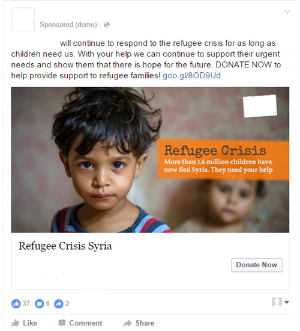
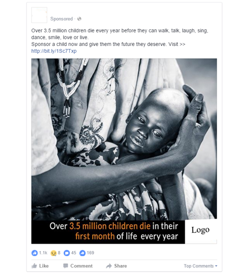
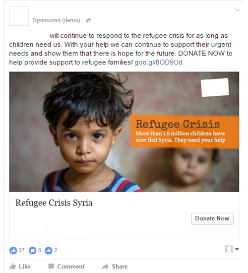
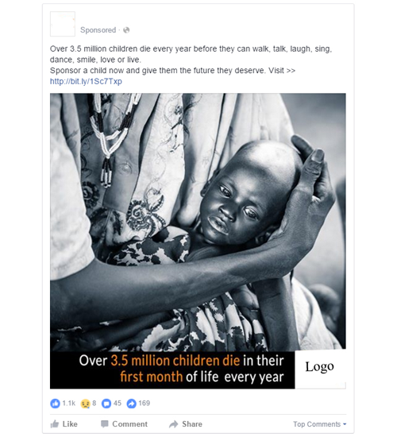

About
The client is one of the global leading development and humanitarian relief organisations, dedicated to addressing the causes of poverty worldwide. They work in a number of areas including transformational development, emergency relief, promotion of justice, strategic initiatives and promotion of public awareness. Their Irish office main fundraising activities are child sponsorship programmes and charitable donations, alongside charity gifts, and fundraising and advocacy events, among others.
The Challenge
For many years, the NGO's main fundraising strategy has been door-to-door fundraising. Faced with increasing competition in the crowded Irish market and with online donations constantly growing over the past decade, the client tasked our team with the challenge of developing a comprehensive online strategy, inclusive of website development an ongoing digital marketing promotion, with the final objectives of digitally acquire child sponsors and donors on an ongoing bases.
The client also needed to increase brand awareness in Ireland. The challenge was for our team to create a digital design and strategy that would increase public awareness of relevant target groups and at the same time stand out from competitors, cutting through the noise of increasingly pervasive online advertising techniques.
The Strategy
Sponsorship is a long-term commitment of a sponsor to support a child and their communities through their developmental journey. Choosing an organization to sponsor a child entails research, consideration and trust building. For this reason, we decided to run a permeating and comprehensive digital campaign that would establish the client as a global leader organization in child sponsorship programmes and emergency response, and conveyed the imagine of a trusted non-profit brand in the controversial scenario of charities events that have eroded Irish people’s trust in recent years.
The website was redesigned to provide the best online experience from acquisition to retention, including increasing conversion rates, engagement, improved search engine ranking, usability, mobile experience, social media integration, and simplicity.
The main objectives of the digital marketing strategy were to increase brand awareness and lead generation. The objectives were pursued through a comprehensive set of goals and KPIs distributed across a number of digital marketing channels and tools. We profiled and targeted the audience though sophisticated targeting options available in most digital channels, including demographic characteristics, locations, behaviours and interests online.
Digital marketing activities included:
• Social Media Organic and Paid marketing: Facebook, Twitter, Pinterest, Instagram, Google +, YouTube;

 





• Search Engine Marketing: Google AdWords, Search Engine Optimization, Bing Ads
• Content Marketing: working with the client, we curated an editorial calendar and produced content pieces for a number of digital assets; we developed and constantly updated World Vision’s News section
• Affiliate marketing: we created banner ads, video ads and native content for publishing on a number of websites including the Irish Independent, RTE, the Daily Mail, the Journal, female and parenting networks of websites, local newspapers websites etc.
IMAGES C – replace static images with live banners
• Remarketing: Adroll, Google Remarketing, Facebook and Twitter Custom Audiences
• A/B Testing: we tested landing pages performance using Google Analytics Experiments and Optimizely
• Email marketing: the email marketing strategy was used to nurture prospects at different stages of their decision making process and for retention of existing child sponsors IMAGES D
We established a set of metrics to monitor and report in order to constantly improve channels performance, prospects journeys online and conversion rates on the website.
Performance and conversions were tracked through E-commerce and specific sets of dimensions and metrics in Google Analytics, while search engine organic performance was monitored though Google Search Console and SEO Moz, among others.
We run bespoke campaigns for different initiatives and fundraising events with goals including events registrations, newsletter subscription, movie screening registrations, gifts purchases online, donations for emergencies etc.
Results
The digital activities have redefined the NGO's market position and have become the client’s main source of sponsors and donors, establishing and consolidating the charity's position as a leader non-profit organization in Ireland.
Retention digital marketing strategies have reduce the drop-off rate of existing sponsors by 50%
The cutting edge digital marketing techniques attained global recognition from the NGO's International headquarters.
In addition to sponsors and donors, bespoke digital marketing campaign also achieved impressive results in the acquisition of registrations to fundraising events, newsletter signups and charity gifts sales.
Our team's agile and dynamic working process facilitated the setting up and launch of donation campaigns immediately after humanitarian emergencies - such as the Nepal earthquake or the Syrian refugee crisis – when people have higher propensity to donate on the heels of widespread news publicity.
Website Traffic, conversions, lead generation, engagement, social media presence, search engines ranking and website authority have all increased and digital activities are continuously monitored and optimized to maintain and improve the NGO's digital performance.